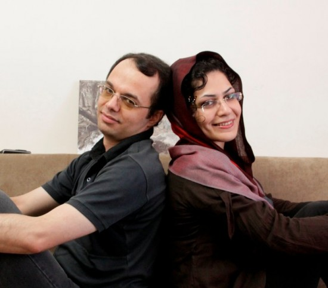

|
|
|
Browsing
Contact Us |
Campaigners |
Face to Face |
Tribune |
Interview |
News |
On the Web |
One Million |
Report
Farsi | Français | German | Italian | Spanish | العربية Also in this section
|

Timeline of Events Following Bahareh Hedayat’s Arrest Two Years Into Bahareh Hedayat’s Arrest, She Remains in PrisonSaturday 31 December 2011 Change for Equality:Two years have passed since the arrest of Bahareh Hedayat, women’s rights and student’s rights activist and Campaign member. Persian2English, a human rights site has developed the following report chronicling Bahareh’s arrest and developments following her arrest. Persian2English – Three full days had passed from the 2009 mass Ashura protests (December 27) when student activist Bahareh Hedayat, who was 28 years old at the time, was arrested and transferred to the notorious Evin prison. It was during these turbulent times in Iran that bright and goodhearted people like Bahareh had to pay the ultimate price for the shared struggles many Iranian citizens are forced to face. Reliving Bahareh’s Arrest It was December 30, 2009. Bahareh (a member of the Tahkim Vahdat Iranian student alumni organization), her husband Amin, and one of their mutual friends had paid a visit to Dr. Abdollah Ramezanzadeh, a former government spokesman who was released from Evin prison a week earlier. When they were returning home from the visit, Bahareh had laughed out loud and said, “If I’m captured this time, I won’t be released any time soon.”
 They got off at Enghelab Square and began to walk. They were being followed. Mehdi Arabshahi, another Tahkim member had been arrested two days prior, and Bahareh was concerned for the others. Her husband Amin had convinced her to make a trip to Mashhad city the next day to avoid the dangers in Tehran. It was around sunset. Bahareh went home to grab some warm clothes for Mashhad. She was tired. She said that she didn’t want to go. While she was gathering her belongings, a reporter from Radio Zamaaneh called her, and Bahareh gave her last interview. The Iranian authorities had the house under surveillance, without the knowledge of Bahareh and Amin. When they left the house and reached the corner of the street, two men approached them: “Mrs. Hedayat?” She was composed in her reply: “No, you are mistaken.” They took a few more steps forward when a car blocked their way. This time, Bahareh and Amin recognized the Iranian authorities in the vehicle. It was approximately 9:00pm. Amin and Bahareh were both arrested and taken back to their home. After the Iranian authorities searched the residence for three hours, they returned Amin’s identification card to him. Bahareh laughed, and her eyes were glistening. She said, “This means that they are not taking the both of us- only I am going.” They weren’t allowed to say goodbye to each other. She took off her watch and her wedding ring at the front door and handed them to Amin. It was past midnight. She was seated inside the car, and from behind the window Amir noticed her smile- it was bitter. As the car drove away, Amin saw Bahareh holding up her fingers and giving the V sign (for peace and victory). The minute Amin turned on his mobile phone, student activist Ali Malihi called him. He said, “Amin, why is your phone off?” Amin replied, “They took Bahareh, Ali.” Today is December 31, 2011. Bahareh Hedayat was arrested two years ago today. She is still held in Evin prison. She is sentenced to nine and a half years in prison for speaking out against the injustices in Iran. Recently, she was also issued an additional six-month prison sentence. Timeline of events in Bahareh Hedayat’s life after her arrest December 31, 2009 | Bahareh Hedayat was arrested February 19, 2010 | Jafari Dolatabadi (the Tehran Prosecutor) personally indicts Bahareh Hedayat February 28, 2010 | Two months of interrogation end for Bahareh Hedayat March 10, 2010 | Bahareh Hedayat’s case file still not registered at the court March 21, 2010 | Detained Tahkim Vahdat members transferred to Evin prison’s general ward April 9, 2010 | Detained activist Bahareh Hedayat nominated for Student Peace Prize May 7, 2010 | Update: Court hearing held for Bahareh Hedayat May 21, 2010 | Bahareh Hedayat and Milad Asadi receive heavy sentences from Revolutionary Court May 29, 2010 | Latest News on Bahareh Hedayat and other Imprisoned Students July 25, 2010 | Student activist Bahareh Hedayat sentenced to nine and a half years in prison September 2010 | Bahareh’s & Milad’s court hearing for their defense canceled December 5, 2010 | Bahareh Hedayat writes letter from prison for Student Day, December 7th December 28, 2010 | Bahareh Hedayat’s physical condition deteriorating after one week on hunger strike January 21, 2011 | Visitation bans for Bahareh Hedayat and Mahdieh Golroo Continue February 4, 2011 | Bahareh Hedayat, Majid Tavakoli, & Mahdieh Golroo summoned by Iranian Judiciary March 26, 2011 | Birthday campaign launched for Bahareh Hedayat, husband speaks out after prison visit June 2, 2011 | Bahareh Hedayat’s husband arrested for speaking to media at funeral ceremony June 26, 2011 | Imprisoned student activist Bahareh Hedayat writes letter to husband November 5, 2011 | Bahareh Hedayat and other students issued additional prison sentences |